Anny, eu queria que isso aqui começasse meio em silêncio, sem explicar demais, porque tem sentimento que perde a força quando a gente tenta organizar tudo bonitinho. Então eu preferi fazer do meu jeito: deixando você atravessar isso como quem entra num lugar escondido.

Talvez você nunca tenha percebido, mas tem momentos em que você simplesmente aparece e muda o peso do dia. Não precisa fazer nada enorme. Às vezes é só o seu jeito, o seu sorriso, uma resposta sua, uma foto aleatória, uma lembrança pequena. E pronto. O mundo fica um pouco menos comum.
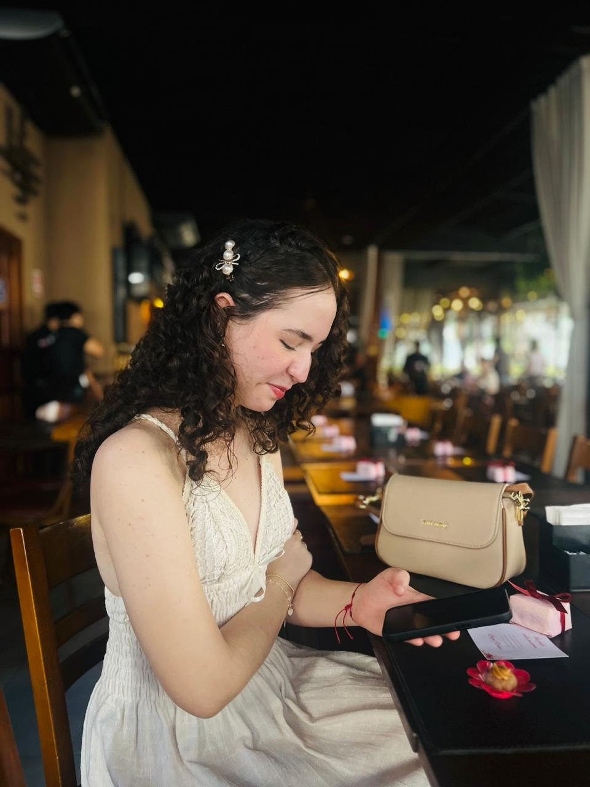
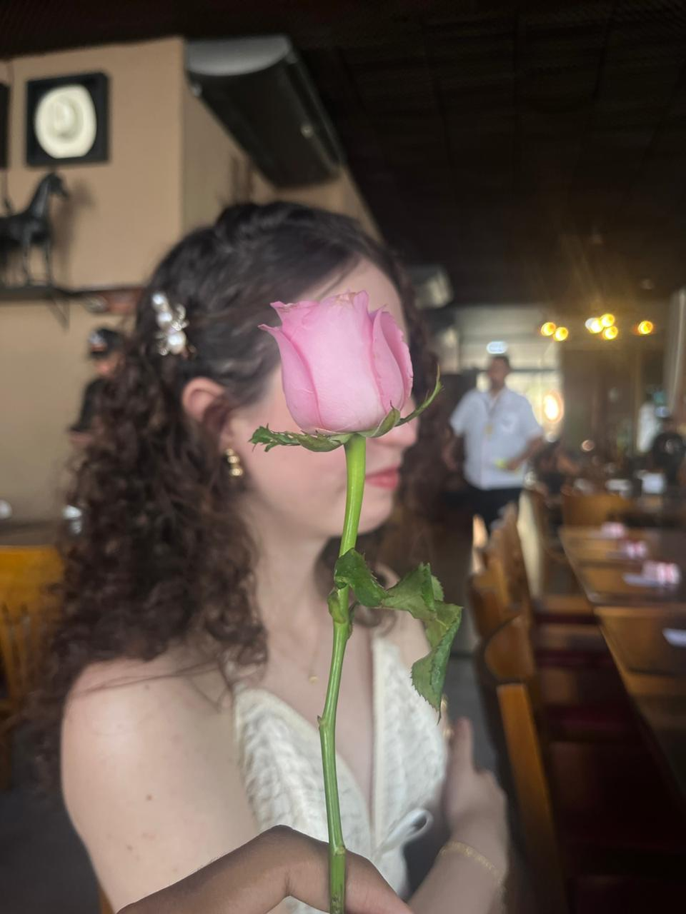
Eu gosto de reparar nos detalhes que talvez você nem dê importância. O jeito que você olha, a forma como sorri sem perceber, suas manias pequenas, sua presença, até esses momentos bobos que passam rápido demais. Pra mim, muita coisa sua vira memória antes mesmo de acabar.
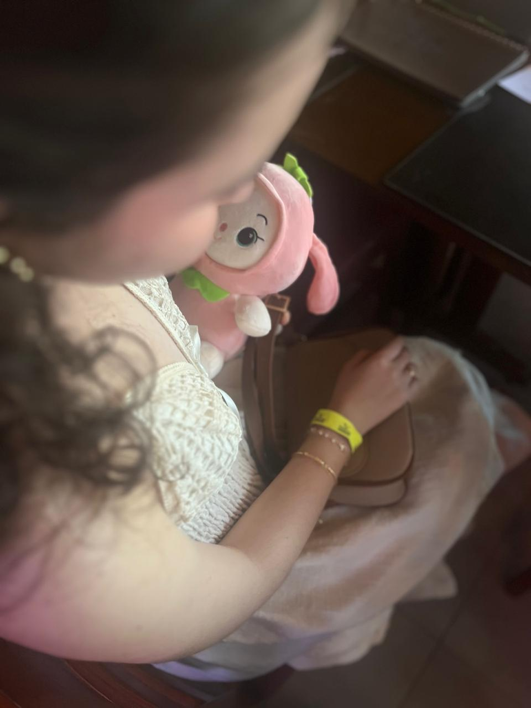
Eu sei que às vezes eu posso não conseguir demonstrar tudo do jeito certo. Posso falar pouco, posso travar, posso tentar brincar quando na verdade queria dizer algo bonito. Mas isso aqui é uma tentativa sincera de deixar registrado uma coisa: você é especial de um jeito que eu não queria deixar passar batido.
Quando eu penso em você, não penso só em uma pessoa bonita. Eu penso em alguém que tem presença. Alguém que fica na cabeça, que dá vontade de cuidar, de proteger, de fazer sorrir. Alguém que, sem perceber, virou uma parte boa dos meus dias.
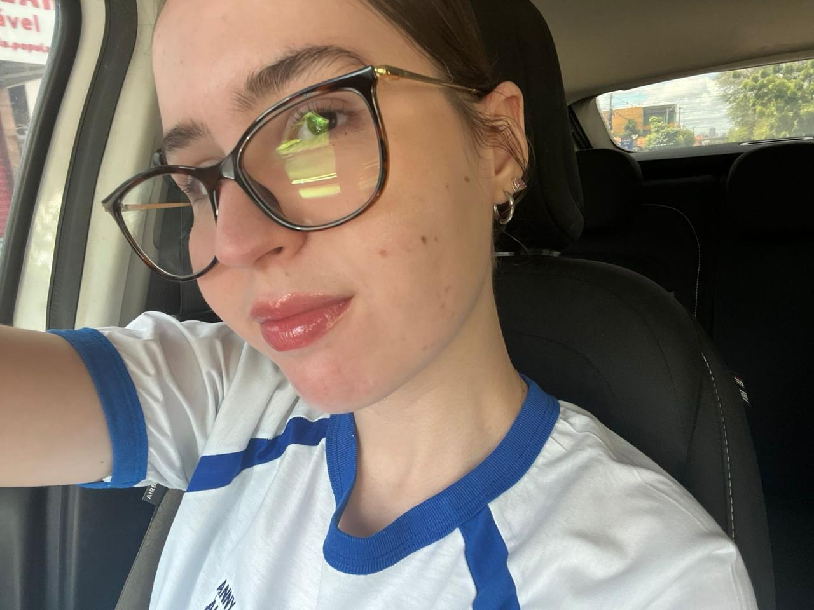
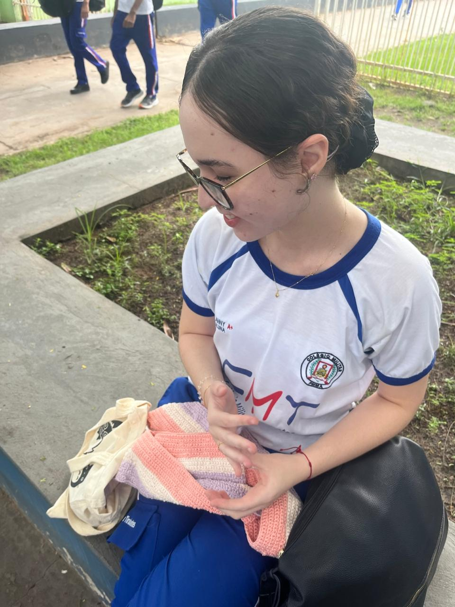
E mesmo que esse site tenha foto, vídeo, música e um monte de detalhe escondido, a verdade é que nada disso chega perto. Porque o presente de verdade não é a página. É o carinho que eu coloquei tentando fazer você sentir, nem que fosse por alguns minutos, o quanto você importa.
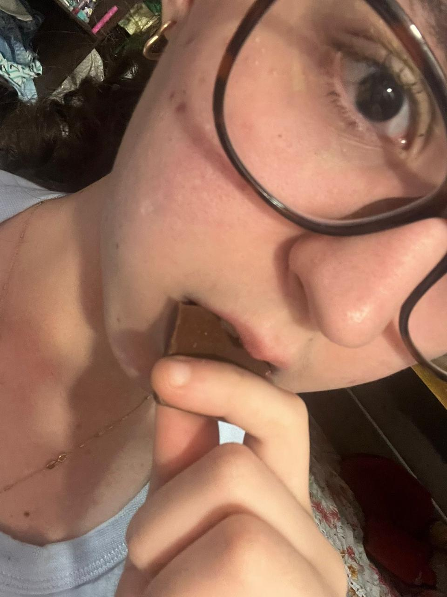
Eu queria que você lesse isso sem pressa. Como se cada parte fosse uma estrela acendendo aos poucos. Porque foi assim que eu montei: não pra ser só bonito, mas pra parecer com aquilo que eu sinto. Algo calmo, intenso, meio secreto, e completamente seu.
Não sei se isso vai te fazer sorrir, ficar com vergonha, pensar em mim ou só passar uns minutos olhando. Mas se em algum momento você sentir que foi lembrada com carinho, então já valeu. Porque era isso que eu queria: te fazer sentir amada sem precisar gritar isso pra o mundo inteiro.
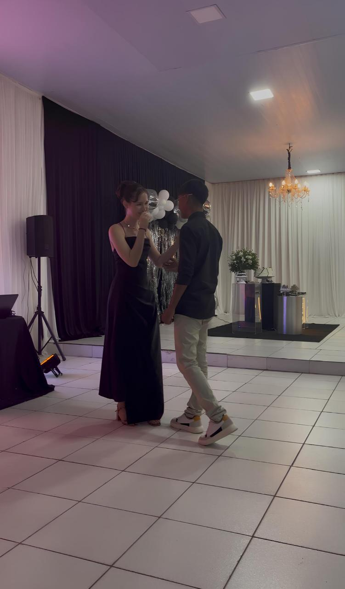
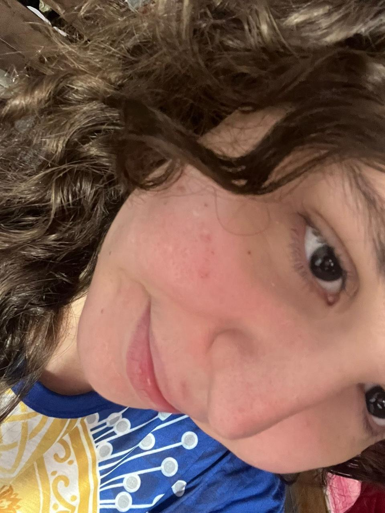
Eu gosto de você de um jeito que mora nos detalhes. No que eu lembro sem querer. No que eu reparo sem falar. No quanto algumas coisas suas ficam comigo mesmo depois. E talvez esse seja o jeito mais sincero que eu encontrei pra te mostrar.
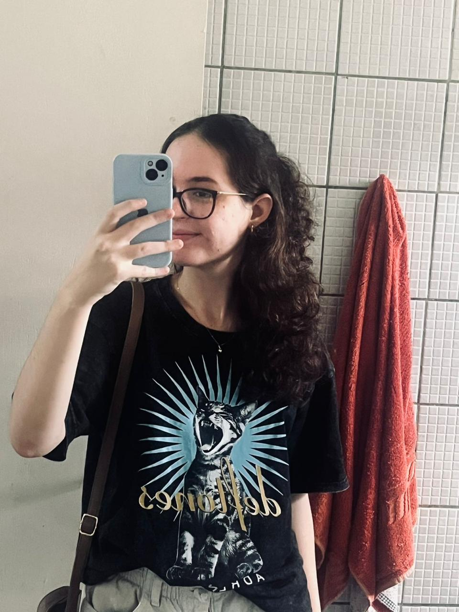
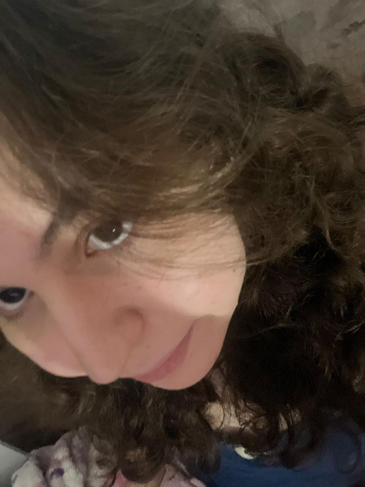
Então guarda isso: em algum lugar desse universo enorme, existe alguém que fez uma página inteira só pra você. Não porque precisava. Não porque era obrigação. Mas porque você merece receber algo que tenha cuidado, intenção e coração.
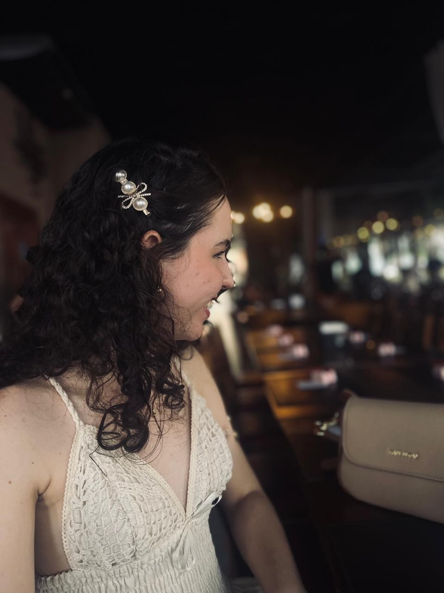
E se eu pudesse resumir tudo, mesmo sabendo que resumo nenhum dá conta, eu diria: obrigado por existir desse jeito. Obrigado por ser você. E obrigado por, sem perceber, ter virado uma das partes mais bonitas do meu mundo.